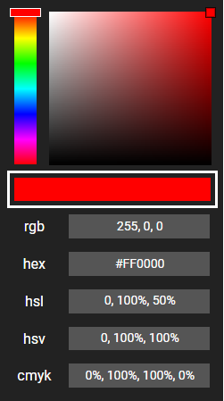
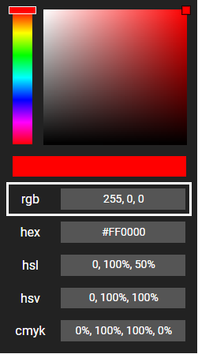
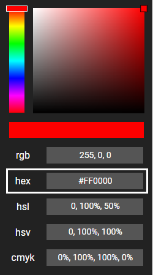
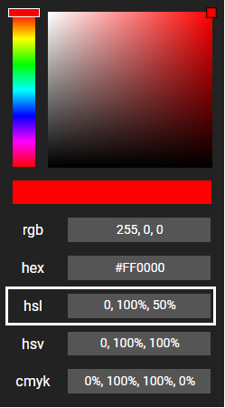
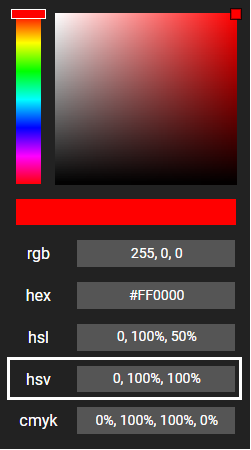
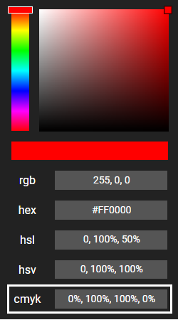

Features
The color picker has a hue bar and main screen that are always added automatically. By default, the color picker has the dark theme and all components are added. You have choice over which theme and which components you need for your color picker.
The user can input colors into the color type boxes, which will be reflected on the main screen. If you need to use the color chosen by the user, the current color is stored in local storage under the key 'rgb' and the color is formatted like this: 255, 255, 255 (white in rgb).
When you add the color picker to your html, if you want to customise the color picker, you can add an id in this format:
id="theme:[add theme here]; components:[add component list here, split by commas]"
For example, if you wanted the light theme with the color bar and rgb data, your id should look like this:
id="theme:light; components:colorBar,rgb"
Please note that the names of themes and components are case-sensitive, so ensure you add them correctly. Documentation for all custom features is provided below.
Themes
The color picker to the left has the 'dark' theme, which is the default if you don't opt for a different theme.
Theme Name
Theme Colors
Example
Dark (default)
id="theme:dark"
Background color: #222222
Input background color: #333333
Text & slider outline color: #FFFFFF
Light
id="theme:light"
Background color: #EEEEEE
Input background color: #FFFFFF
Text & slider outline color: #333333
Black
id="theme:black"
Background color: #000000
Input background color: #333333
Text & slider outline color: #FFFFFF
Grey
id="theme:grey"
Background color: #6E6E6E
Input background color: #A2A7A5
Text & slider outline color: #000000
Dark Blue
id="theme:darkBlue"
Background color: #002152
Input background color: #3066BE
Text & slider outline color: #FFFFFF
Custom
id="theme:custom:[background color],[input background color],[text & slider outline color]"
Background color: any hex color
Input background color: any hex color
Text & slider outline color: any hex color
Components
The color picker has all components enabled as default. You can opt for specific components by adding them to the id.
Color bar
id="components:colorBar"
RGB input
id="components:rgb"
Hex input
id="components:hex"
HSL input
id="components:hsl"
HSV input
id="components:hsv"
CMYK input
id="components:cmyk"
